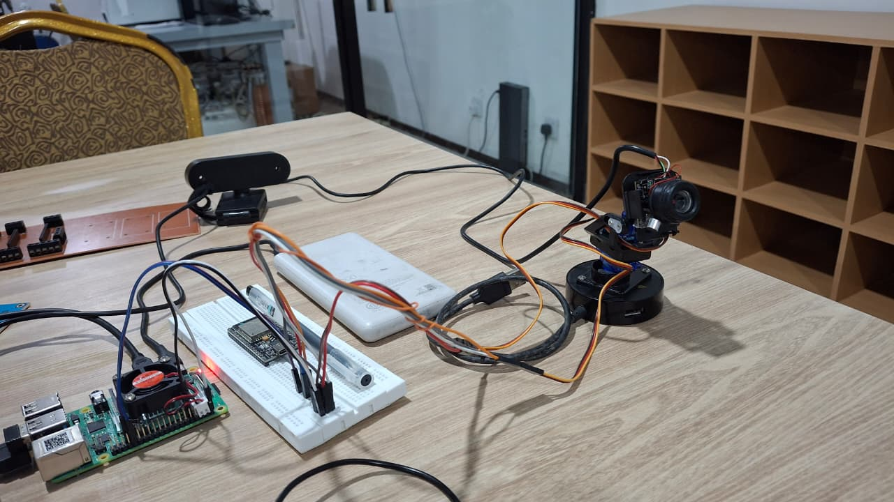

A 2026 PBL prototype that demonstrates human detection, web monitoring, and pan-tilt camera movement; automatic light and fan control was the design goal.
My rolePBL team lead; hardware and sensor design; enclosure planning
SystemRaspberry Pi, webcam, Python, pan-tilt servos, web dashboard
StatusDetection, dashboard, and servos tested · Team project

Physical prototype with camera, servo mechanism, and supporting electronics
01 / CASE STUDYThe system
A webcam observes the room. The Raspberry Pi processes human-presence detection, displays results through a web dashboard, and moves the camera with two servos. The project plan also proposed relay control of the room light and fan.
02 / CASE STUDYMy contribution
Led the PBL team and worked on hardware and sensor design, as recorded in the project report.
Designed the enclosure and planned the system flow from camera input to web monitoring.
Supported integration of the Raspberry Pi, camera, and pan-tilt mechanism.
03 / CASE STUDYTested result
The final report documents real-time human detection, a local web dashboard, and movement of the two camera servos. It lists light and fan actuation as future development.
The report does not verify relay-driven light or fan actuation or give a quantified detection-accuracy result.